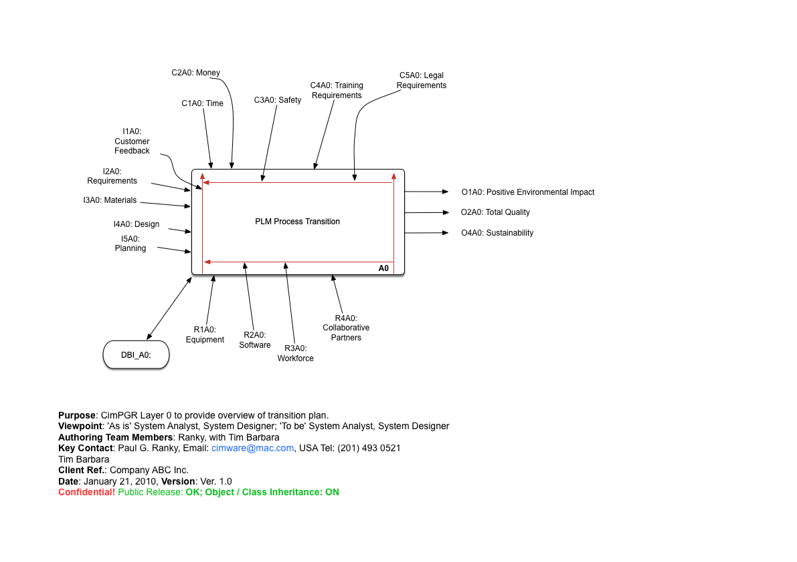

Name: Timothy Barbara
IE-655
02-27-2019
eLearning Pack ID: IE-655-Spring 2-19-14-02
Virtual Company Name: Titan International Manufacturing
Titan International Manufacturing's goal is to create environmentally friendly, smart, and sustainable washing machines and driers for home use. Every day millions of Americans wash their laundry in so-called "dumb washing machines" that are old, outdated, energy inefficient, and lack the capabilities to filter harmful laundry byproducts like microplastics from entering the environment. Our smart washer will feature an intuitive interface and internet capabilities all with the goal of reducing waste.
I received full credit on assignment 0.
I received full credit on assignment 1.
I received full credit on assignment 2.
I received full credit on assignment 3.
I received 18/20 on assignment 4. The professor's comments were "a bit slim."
Using CNC machines we can automate the creation of various metal components that will be used to make the boat engines and other fittings. This will allow us to create the basic structure of our boats using fewer parts. Designing for minimum parts is a goal of this venture. We will be working closely with Tosei and MPAL in this project. This will be a part our Six-Sigma process where we strive for zero defects.
We will be perfomring CORA Analysis to determine what our customers are looking for in a personal watercraft. Cora is
We will be extensively employing CAD and computer simulation in the design of the boat. Models will be created to test various shapes in different water conditions.
Poka-Yoke means "mistake proofing." It calls for quality checks at every level and respects the intelligence and experience of all levels of worker from design to manufacturing when it comes to the whole manufacturing process. The overall goal is to strive for zero defects.
By analyzing our risk through the Failure Mode and Effect Analysis and Process Failure Risk Analysis models we can determine which areas of manufacturing are the highest risk and apply resources to correct these areas. By employing these methods we hope to avoid unnecessary waste through failure of processes.
Process Failure Risk Analysis is used to identify and minimize potential failure risks in the process as well as the components. We applied this analysis to the bilge pump installation process of our boats. The bilge pump is a critical part that drains water from the hull of the boat. Without this component a boat can fill with water and sink. Through this analysis we identified potential areas where failures would be most costly such as a faulty pump being delivered to a customer.
Note that the first quality check has an RPN of 210 when we fail to catch a faulty pump. Down the line this escalates to an RPN of 720 if the entire boat passes the test when it should have failed. Therefore it is critical that we get our inspection process right early.
Through the analysis we uncovered the following customer requirements and corresponding importance ratings for the Greenboat.
Buoyancy Requirements 5
Powerful Engine 5
Colors Available 2
Maintain high reliability rating 5
Smart Phone Connectivity 2
Be a green company 3
Provides statistics on usage 2
Provides statistics on waste saved 2
Educate customer 5
Algee Repellency 5
Quiet Operation 4
WiFi Reliability 3
Comfortable 5
Ergonomic Seating 4
Ergonomic Controls 4
Safety 5
Self boating capabilities 4
Towing Capable 4
Built in cooler 2
Weather alerts 5
Based on this we calculated that the items with the highest AIR values are the following.
Industrial Design Team (410): Significant resources will gi towards our design team. They will have a hand in developing the batteries, motor, and hull. These are by far the most important parts of a boat.
Computerized Manufacturing (396): We are on the cutting edge of boat technology. This will require a highly sophisticated computer design system. Our manufacturing process must be highly automated in order to be efficient and green. By planning every aspect of the process before implementation we can identify issues earlier and prevent issues later. It makes sense to tackle this item as early as possible and give it additional funding.
Quality Control Checkpoints (387): No customer wants their boat to sink or leave them stranded. The implementation and control of quality control checkpoints throughout the manufacturing processes will help us identify problems earlier. Quality and reliability is a hugely important metric for boats as there is already a stigma in the boating community that boating is an extremely expensive hobby and that boat stands for "bust out another thousand." We hope to change this image.
These items will integrate with our manufacturing plans by allowing us to dedicate resources up front to deal with our more important issues.
Spreadsheets available here:
Many people use personal watercraft for recreational use such as speed boats and jet skis. The traditional speed boat is often powered by a two stroke engine that runs on a mixture of oil and gasoline. Although these engines became subject to stricter regulations in 2004 and again in 2007 they are still not held to the same standards as automobiles and can still leak a significant amount of gas, oil, and other lubricants into the water. Additionally, the harsh chemicals used to clean and maintain boats have a negative effect on water quality and wildlife can be disturbed by the loud noise.
Just as the electric car continues to revolutionize the automotive industry, we hope that similar electrification strategies can be applied to watercraft.
For years electric motors have either been reserved for small craft on small lakes or slow moving trolling motors for fishing. Some tinkerers have managed to build their own electric speed boats using electric car batteries and some companies have managed to build purpose built race boats but as of yet nobody has brought a true eco-friendly electric speedboat to the mass market due to high cost. Our goal is to create an electric powered boat that can match the performance of a conventional gasoline powered pleasure craft. The materials used to manufacture the boat must be purpose built and reflect good sustainable green engineering practices.
Green Supply Chain Management has become something of a marketing buzzword in recent years as firms scramble to "greenwash" their image by placing unrealistic green targets they have no intention of meeting. True green supply chain management is driven by careful planning and targeted cost reduction through waste reduction, not just by a desire to look good to customers. One such example is Campbells Soup who managed to reduce waste across their supply chain by 85% which yielded significant savings. Our company strives to reduce costs associated with our supply chain
Just in timeis an inventory management system which increases efficiency and reduces waste and storage costs. It requires accurate demand forecast so items needed by the production line are available when needed. We will employ this strategy to reduce our storage needs and waste.
Buildings can be built with sustainability in mind. The Leadership in Energy and Environmental Design program is one such program which encourages the development of such buildings. LEED certified buildings feature sustainable green design including energy and water use, waste management, transportation, indoor air quality, and toxin free environments. We will strive for all of our facilities to be LEED Platinum certified.
3D printing is revolutionizing manufacturing. 3D printing enables complex components to be created with greater ease. Additive manufacturing uses less material than traditional methods where parts are cut from larger pieces. 3D printing also allows for rapid prototyping of items saving development and manufacturing time and resources. We plan to make heavy use of 3D Printing in our boats for engine components to hulls.
Rapid prototyping allows products to be developed with greater speed. By applying tools like CNC, 3D printing, and CAD, companies can quickly and efficiently evaluate designs and parts without needing expensive and time consuming manufacturing setups. This allows parts to be shared and evaluated faster which can lead to the earlier identification of defects and other problems.
Telecommutingallows employees to work in remote locations without the need to be in the office. It is done through the use of video conferencing, collaborative software, and other communications tools. This provides employees with the flexibility to work in locations which are convenient to them and gives businesses access to talent across the globe. Additionally there is a benefit in terms of reduced costs of commuting and time wasted traveling. We will use telecomuting to reduce our commuting costs and environmental impact.
Eco Friendly Packaging aims to reduce the disposable packaging used in a product. Many boats come wrapped in plastic when new which creates a lot of unnecessary waste. We will instead provide the customer with reusable weather resistant covers that can be reused time and time again to protect their boat.
Organic batteries are longer lasting and more eco-friendly batteries made of organic compounds. This cutting edge technology will allow our boats to travel farther and cheaper.
Many traditional boat cleaners are toxic to the environment and many which claim to be green are also in fact toxic. We will educate our consumers on cleaning products and provide and use only the best on our boats.
Plastic has historically been difficult to recycle as it retains traces of dyes and chemicals used to treat it in the past. Researchers are hoping a new plastic made with dynamic covalent diketoenamine bonds can change this. The plastic is easier to recycle with chemical methods. We will seek to use recyclable plastic in all of our products.
When people think of "sustainable green engineering" many would envision expensive solar powered factories making eco friendly products but there is far more to sustainable green engineering than just the environment. Sustainability refers not just to environmental concerns but also to how sustainable a process is from an economic standpoint.
Far from just a marketing ploy, sustainable green engineering can have an enormous positive impact on a firms bottom line. Deploying PLM tools and methods will allow the company to develop new products faster, cheaper, and to a higher standard of quality. By standardizing your PLM platform you will see significant increases in productivity and a huge reduction in costs.
One typical arguments against PLM is the high startup cost, however the cost savings over the next several years will offset this cost. Plus, although there is an implementation and training cost in switching to a new system, many businesses ignore the costs of holding on to legacy systems which are often increase exponentially over time as they become more and more difficult to update and maintain.
PLM allows for designers and engineers to work closely with each other by sharing the same models and framework without the need for cumbersome transitions between teams. Communication is streamlined and teams can more effectively bring new ideas to fruition. The sharing of these components allows for the design of common components and modules which can be shared by multiple products, providing a highly scalable framework on which to build an entire product line.
Top companies use PLM to deliver quality products at a rapid pace. The time to update your strategies is now, before your company is left behind.
The transition plan has been prepared using the CimPGR model.
I1A0: Customer Feedback - We will work closely with our customers to understand their needs and how our product offerings can meet them. We can identify areas where we are weaker in this way.
I2A0: Requirements - Our design team will gather requirements from stakeholders and create meaningful action items in our PLM system.
I3A0: Materials - We must take care to not overstock materials or order the wrong things. This could lead to unnecessary waste and delays.
I4A0: Design - Our product must be designed for manufacturing. We should employ best practices including design for minimum parts and modular products using CAD software.
I5A0: Planning - Planning is imperative to success. We need clearly defined goals for a business to succeed. We can reduce waste by planning ahead.
C1A0: Time - We must take a swift but mindful approach when implementing our plan. It is important we don't miss any market opportunities and can easily adapt to changing conditions.
C2A0: Finance - The goal of the PLM process is ultimately increased profits. This is an investment in our future. As such we need to be mindful of how much we are spending and carefully budget to meet these requirements.
C3A0: Safety - Safety must be at the forefront of everything we do from the design of our products to our manufacturing systems. Accidents can cause unneeded delays and waste valuable resources.
C4A0: Training Requirements - With any new PLM system there will be new training required. This training is important because our process will not be correctly implemented without it. A process implemented with poor training will only lead to more waste.
C5A0: Legal Requirements - Our company must opperate within the confines of the law. If we are caught doing illegal things we could be subject to fines which will cut into our bottom line. We will also suffer reputational harm.
R1A0: Equipment - Our state of the art equipment such as 3D printers and and CNC machines enables us to produce products more efficiently than traditional methods.
R2A0: Software - Our CAD software and PLM systems enable easier collaboration between teams and allow us to design products in the digital space first saving materials.
R3A0: Workforce - Our workforce is enthusiastic about our industry and passionate about their craft. We can leverage their experience at all levels as part of our Poka-Yoke strategy.
R4A0: Collaborative Partners - Our partner companies understand what we are doing and can provide the tools to help.
O1A0: Positive Environmental Impact - By implementing this process we will reduce waste and have a positive impact on the environment.
O2A0: Total Quality - PLM will enable us to implement a total quality program.
O3A0: Sustainability - PLM will enable us to improve our process and be more sustainable both economically and environmentally.
Layer1 is a child layer of layer0. It splits the steps in later0 into smaller action items with their own assigned resources with details. The layer shows specific information flow, material flow, and allocation of resources.